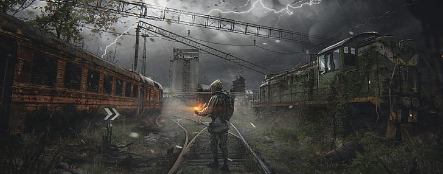
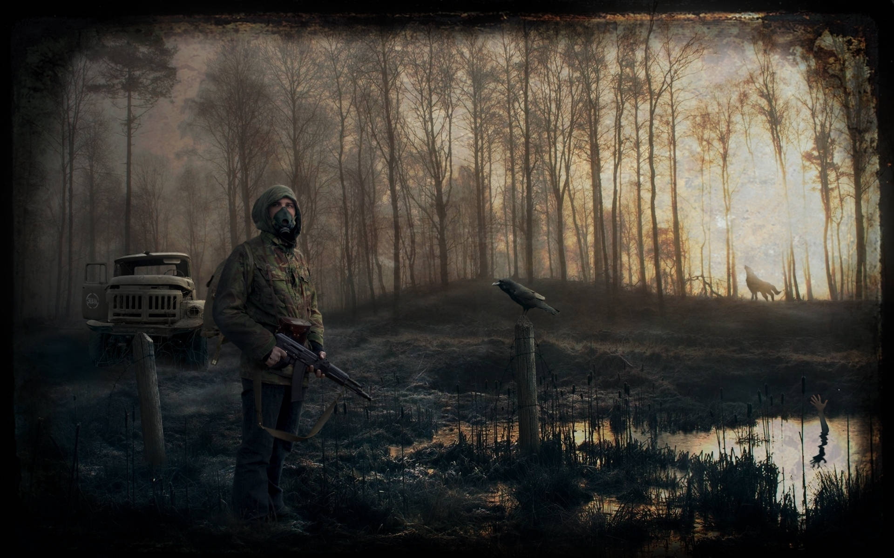
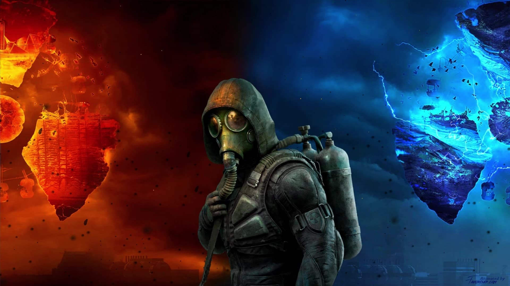
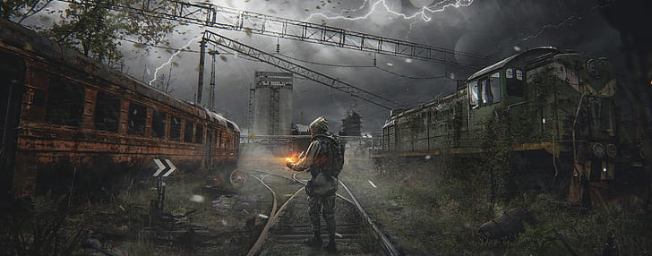
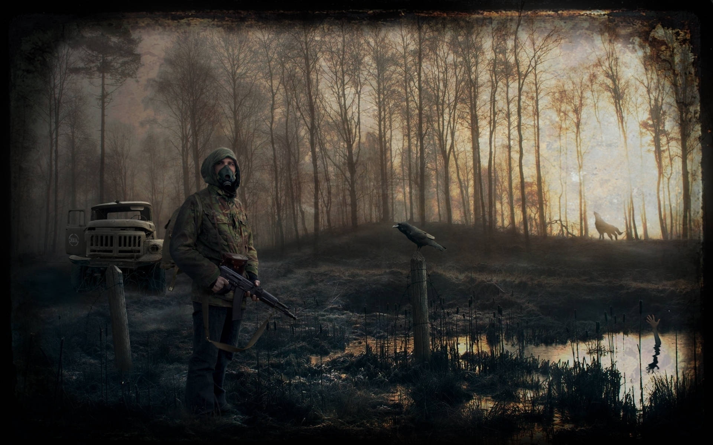
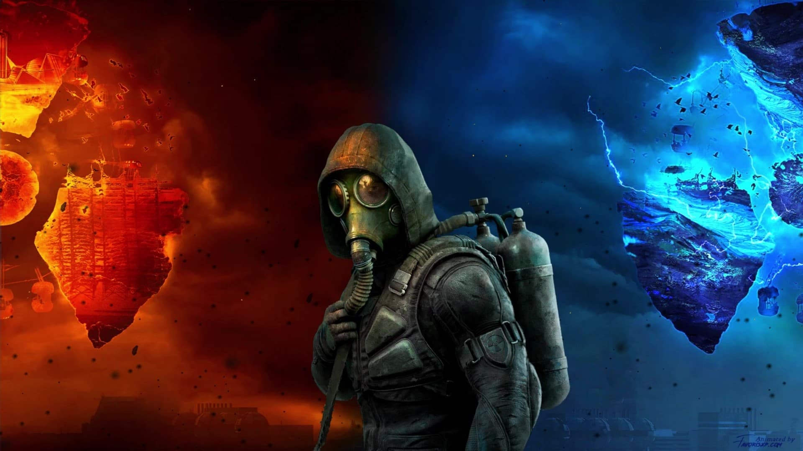
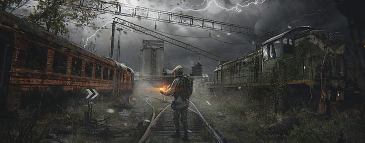
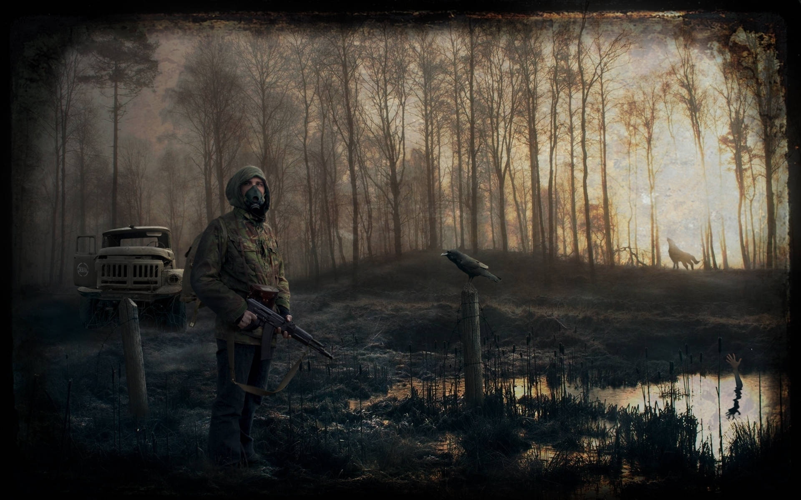
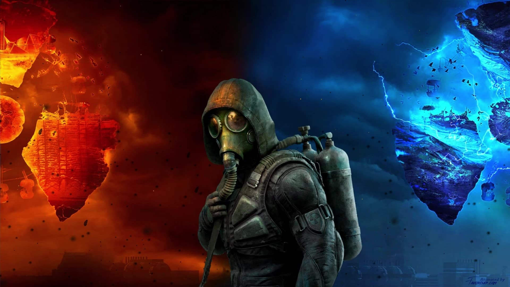

Скриншоты

 






Погрузись в Зону отчуждения. Скоро.
Смотреть трейлерS.T.A.L.K.E.R. 2 — продолжение культовой серии от GSC Game World. Исследуй открытую Зону, полную аномалий, врагов и загадок. Уникальный геймплей, атмосферная графика и глубокий сюжет ждут тебя.



Трейлер №1 — Анонс S.T.A.L.K.E.R. 2